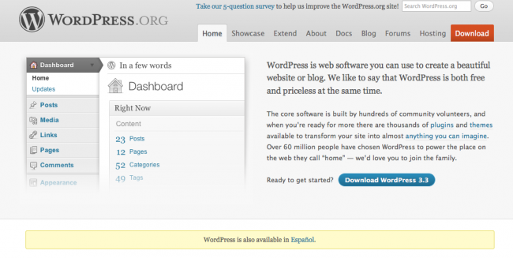

|  |

El CMS para blogs más utilizado del mundo, Wordpress, ha presentado recientemente su versión 3.3, a la que han llamado Sonny en honor del músico de jazz Sonny Stit (aunque para servidor sólo existe un Sonny, Sonny Crockett, of course). Esta nueva versión, en la que han colaborado decenas y decenas de contribuidores, tiene jugosas novedades para los usuarios del CMS pero también para los desarrolladores que, o bien se ganan las habichuelas con esta plataforma o bien hacen (o piensan hacer) sus pinitos con ella.
Entre estas novedades podemos encontrar un nuevo editor para su API, nuevas versiones de jQuery (1.7.1) y jQueryUI (1.8.16), actualización del editor TinyMCE (3.4.5), nuevas funciones entre las que destacan aquellas para manejo multimedia, temás de caché y rendimiento y comunicación con la base de datos, eliminación o deprecación (perdón por el anglicismo) de otras muchas y arreglo de muchos bugs. En definitiva, mucho de lo que empaparse y que viene perfectamente detallado aquí.
Ya sabéis, quizás es el momento de actualizar vuestras Wordpress… algo que, por lo que tengo entendido, ya no es algo de máximo riesgo como lo era hace un tiempo.
Pd: de bonus track un bonito vídeo que la gente de Wordpress ha preparado sobre este Sonny
Vía | Wordpress.org
En Genbeta | Publicado WordPress 3.3 con novedades en el panel de administración
| |